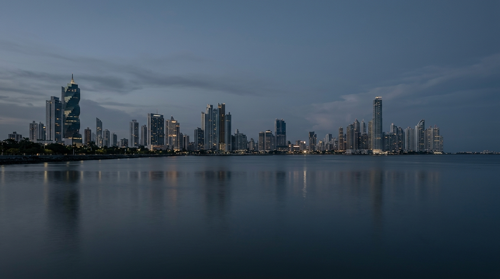

Tu comunidad también cuenta
Reporta, consulta y da seguimiento a los problemas de tu comunidad. Juntos construimos un Panamá más seguro, limpio y habitable.
- Incidencias reportadas
- 1,248
- Resueltas
- 892
- Tiempo promedio de atención
- 3.4 días
- Ciudadanos activos
- 12,500
¿Qué puedes reportar?
Ayúdanos a identificar y resolver los problemas de tu comunidad.
¿Cómo funciona?
Es rápido y sencillo. En solo unos pasos puedes hacer la diferencia.
-
Paso 1
Reporta
Toma una foto, describe el problema y comparte la ubicación.
-
Paso 2
Se gestiona
La incidencia se clasifica y se envía a la entidad correspondiente.
-
Paso 3
Da seguimiento
Revisa el estado de tu reporte y consulta las actualizaciones.
Árbol caído
Árbol caído obstruye parcialmente la vía después de las lluvias.
Comunidades más fuertes con información
SIGEC promueve la participación ciudadana y el uso de datos para mejorar la calidad de vida en nuestros barrios y corregimientos.
Conoce más sobre SIGECParticipación ciudadana
Tu voz genera cambios reales.
Datos para la acción
Información que ayuda a decidir.
Comunidades más seguras
Entornos más limpios, ordenados y habitables.

Un Panamá mejor también depende de ti
Reporta, comparte y forma parte de la solución.
Reportar ahora